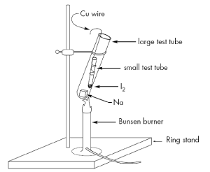

In this demonstration, we use the following reaction:
2Na(s)+ I2(s) ® 2 NaI(s)
that takes place in the following apparatus:

0.6 g Na metal
1 g I2 crystals
20 mL denatured ethanol
Place the freshly cut piece of sodium in the larger test tube, the iodine crystals in the smaller tube and assemble the apparatus. Gently heat the sodium until it melts. By that time iodine vapors will form and descend to the bottom of the larger tube where they start reacting with the sodium. The reaction is very exothermic, so no more heating is needed once it starts. Turn down the lights in the lecture hall to observe the beautifull glow from the reaction. At the end, a white mass of sodium iodide crystals will be spread all over. Recover some of the crystals for later analysis. When the tubes are completely cooled down, add the ethanol in small portions to dissolve any remaining sodium.
Use eye protection. Conduct the demo inside a fume hood. Do not change quantities or reactants in this reaction, otherwise an explosion might occur.
Herman, Z. S.
J. Chem. Ed., 77(5), 619-621, 2000